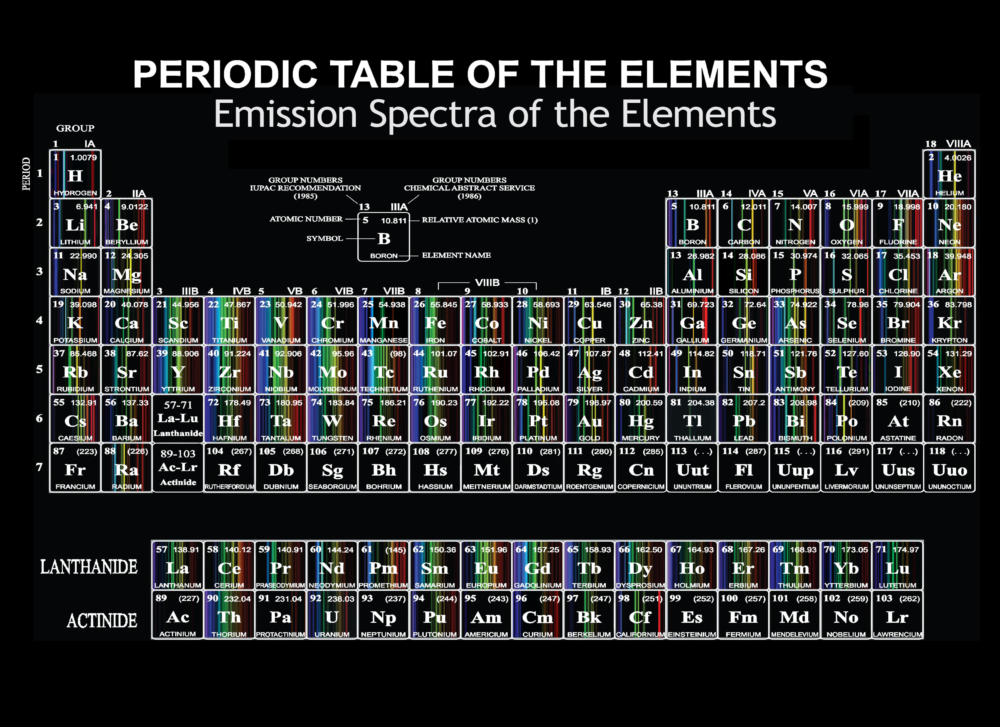

Lys
Elektromagnetisk stråling
Vibenshus Gymnasium
Støttet af
Programmet for fysik
- Hvad er lys?
- Hvorfor kan elektroner skabe lys?
- Emission og kvantemekanik
- Find dit grundstof/molekyle
- Bølger eller partikler?
- Brydning!
- Lys i din hverdag
Elektromagnetisk stråling

Lærereksperiment

En video og en forklaring
Læs en forklaring her: http://alienryderflex.com/polarizer/
En elektron accelererer
Bevæger sig med lysets hastighed.
Hvis man skifter retning
Radio

Højreklik på billedet og åbn i ny tab.
Kvantemekanik
En elektron skifter bane

Atomer og molekyler har fingeraftryk
Emission og absorption

Alle grundstoffer

Eksperiment 1: Find dit grundstof
- Tag dit emissionsspektrum og studér det nøje
- Gå rundt blandt bordene. Forsøg at finde netop dit grundstof.
- Tag de skøre briller på.
- Se på spektrallamperne igen. Vurdér igen, hvilket grundstof der er dit. Det kan godt snyde lidt!
Bølger eller partikler?
Tja, lad os spørge lyset!
Sjove ting med bølger

Set fra oven

Eksperiment 2
- Tag en laser
- Tag et optisk gitter
- Send laserlyset gennem gitteret.
- Hvad sker der?
- Prøv med en anden farve! Eller et andet gitter!
- Hvad sker der så?
Lys er som bølger
Lysenergi
Klassisk
Kvantemekanisk
\[E_\text{foton} = h \cdot f\]
Partikel
Lys er …
både bølger og partikler
Brydning
Mikroeksperiment 1
- Sæt en kniv i det fyldte glas
- Hvad sker der?
Eksperiment 3
- Tænd for lysboksen. Maks 12V! (Alternativt tag en laser.)
- Tag nogle optiske dimser.
- Lys gennem dimserne med lysboksen/laseren.
- Hvad sker der?
- Kan man få laseren til helt af afbøje?
En simulering
Lys i din hverdag
Dine øjne bliver snydt!
Mikroeksperiment 2
- Tag en lille bitte dråbe vand på skærmen af jeres telefon.
- Hav meget gerne hvidt billede på skærmen.
- Hvilke farver kan I se?
Tak for i dag!
- Og husk lys på jeres cykler!